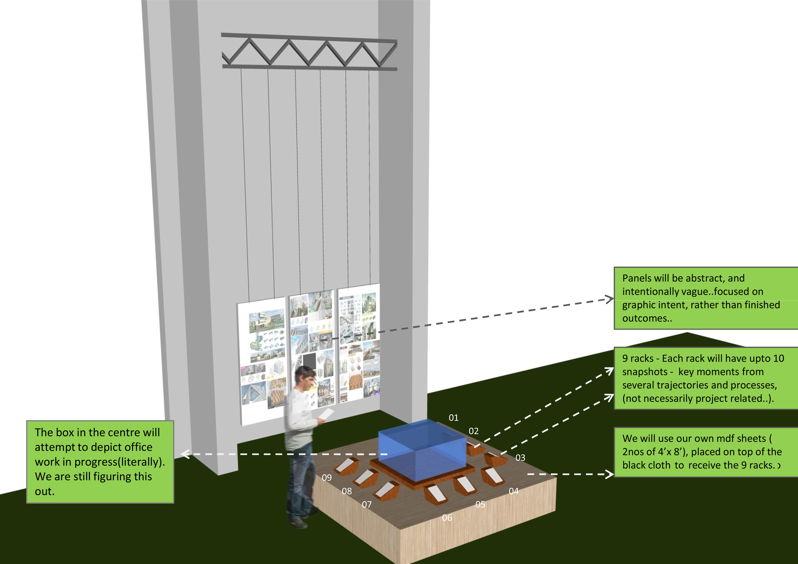
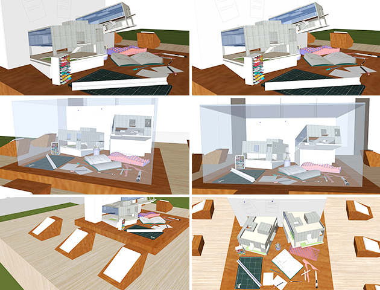
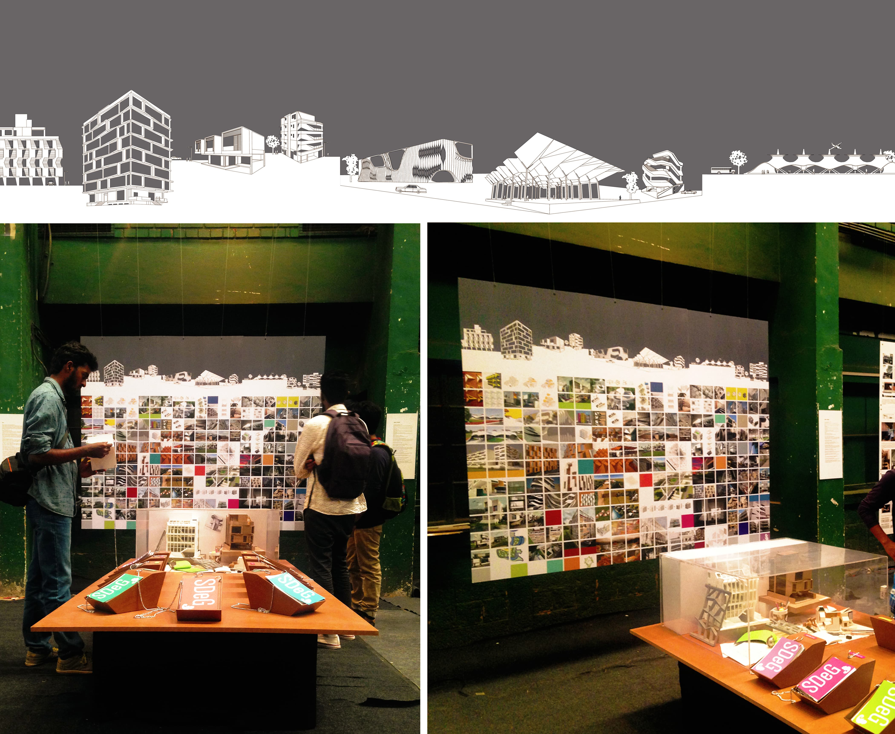
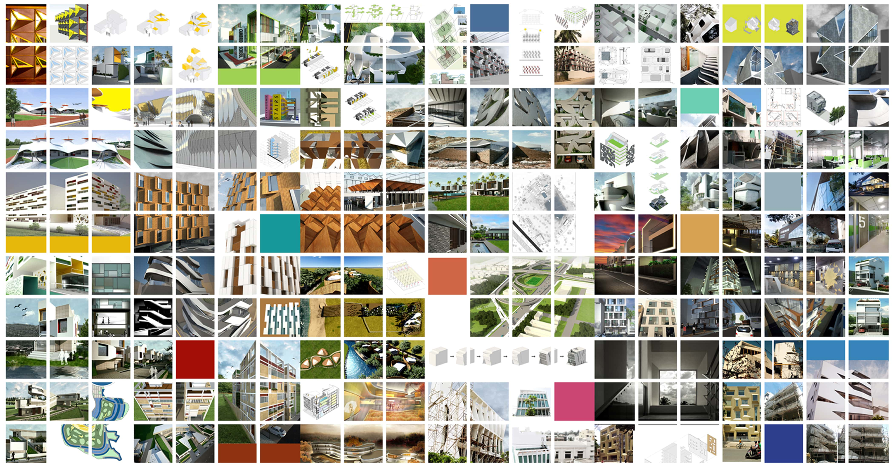

residue
Overview
Installation design on the concept of free flowing work and the process of evolution of an architecture or design project
Description
During my six month internsip at SDeG, Bangalore I got a chance to work on an installlation design where I worked from the conceptualization of the idea to the final implementation. The installation is titled 'residue' and it tries to depict the process of an architect in the middle of work.
Residue is a compilation of sketches, diagrams, drawings, slogans, some ideas that were realized and some that were not, various creative experiemnts. It consists of 73 illustrations tethered to 9 racks, conceived as impulses and insights into the ways we think of design and practice. The transparent enclosure holds models, drawings, notes and other esoteric paraphernalia - crucial to the process of development but later abandoned, as ideas gain clarity and momentum.
The istallation was showcased at MayaPraxis Exhibition Event as well as at Rangoli Metro Art Centre in Bangalore.
SDeG, Bangalore, 2016
The installation depicts the table of an architect and is intentionally kept unordered and vague giving us a peek into the process that happens in the background of every creative process.
Conceptualization and 3-D modeling of the idea.
Ideation of the installation
The back side was filled with sketches and drawings from the work table. The models were placed in such a way that it seemed like they were coming out of the back panel. Attention to detail was given and everyday stuff from the table were dislayed

Box design and developments.
This final design was selected and postcards with various genres of the work were displayedVarious shapes and sizes were tested
Exhibition pictures
The graphic display consisting of 3 panels
The vertical display is perceived as a pixelized catalogue of many outcomes and methods, a collision of colour, scale and type – unsettling and fragmentary from afar, configured when viewed up close.